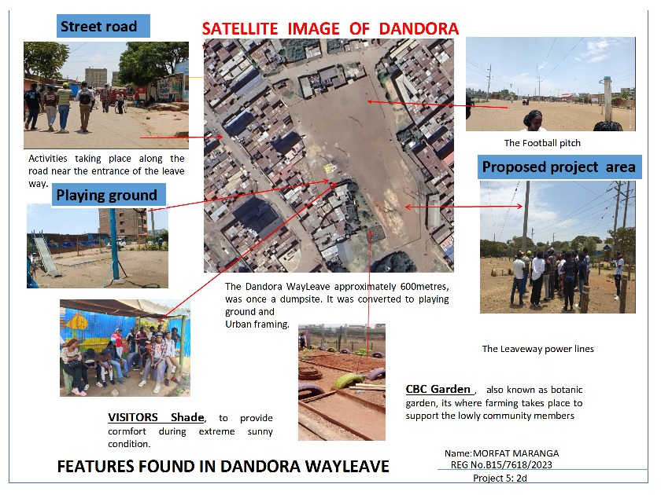
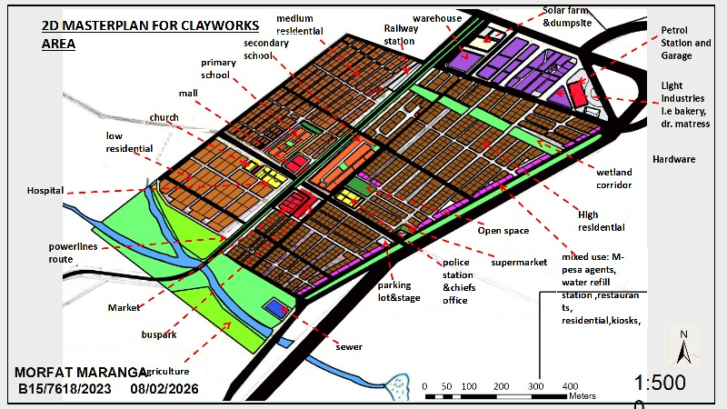

SITE PLANNING
Dandora Wayleave Modern Park
Site planning proposal for the transformation of a power-line corridor into a community-oriented recreational park.
View Project →URBAN & REGIONAL PLANNING
BSc Urban and Regional Planning student with practical experience in physical planning, GIS, spatial analysis, demographic analysis, remote sensing and field research.
ABOUT ME
I am a third-year BSc Urban and Regional Planning student at Kenyatta University in the Department of Spatial and Environmental Planning.
My academic and practical work focuses on understanding places through spatial data, demographic evidence, field research and physical planning principles.
I am particularly interested in GIS, spatial analysis, remote sensing, demographic analysis and the preparation of practical planning solutions that respond to local conditions and community needs.
My portfolio documents selected academic and practical planning work, including rural planning, neighbourhood planning, site planning, GIS analysis and field research.
Site planning, neighbourhood planning, land-use planning and spatial development proposals.
Spatial data management, mapping, terrain, hydrology, land-cover and spatial analysis.
Demographic analysis, field data collection, questionnaire design and evidence-based planning.
CAPABILITIES
SELECTED WORK
Selected academic and practical planning projects demonstrating spatial analysis, physical planning, research and design.

SITE PLANNING
Site planning proposal for the transformation of a power-line corridor into a community-oriented recreational park.
View Project →
NEIGHBOURHOOD PLANNING
Neighbourhood-scale planning project involving land-use zoning, movement networks, open space, social infrastructure and transit-oriented development principles.
View Project →RURAL PLANNING
Rural planning project for Siana Ward in Narok County, supported by household data, demographic analysis, field research and spatial planning.
PLANNING PROJECT
Planning analysis and development proposal documenting spatial conditions, planning considerations and proposed interventions.
View Project →TECHNICAL WORK
Selected GIS work demonstrating how spatial data is used to understand terrain, hydrology, land cover and planning conditions.
Basemap preparation and spatial data compilation supporting the Siana Ward planning project.
View GIS Work →Satellite imagery and remote-sensing analysis undertaken for the Kiambu study area.
View GIS Work →Ongoing spatial analysis involving terrain, hydrology and land-cover information.
In Progress View GIS Work →RESEARCH
Research methodology involving questionnaire design, household-level data collection and field-based planning research using KoboCollect.
View Research Methodology →ANALYTICAL WORK
Analytical work covering population pyramids, population growth, doubling time and dependency ratios, developed to support planning decisions for Siana Ward.
View Analysis →GET IN TOUCH
I am open to academic collaboration, planning opportunities, GIS-related work and professional learning opportunities.
Email Me